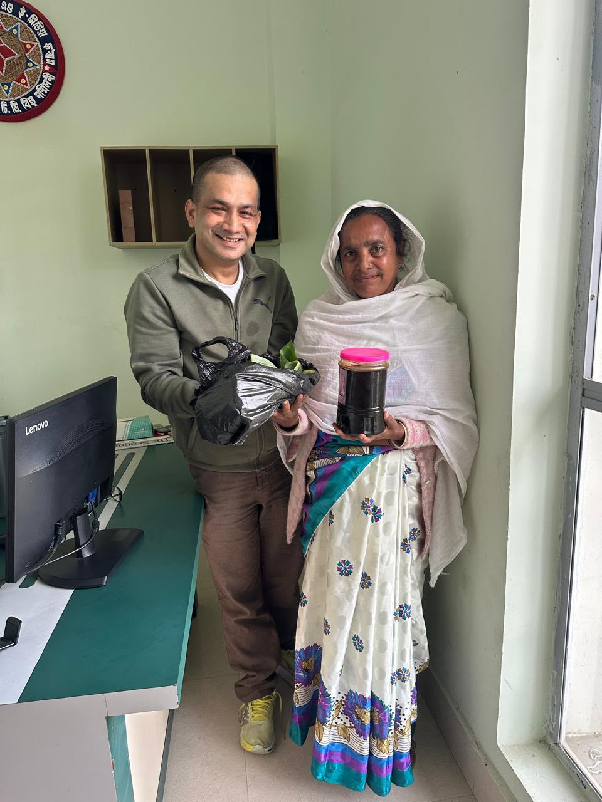
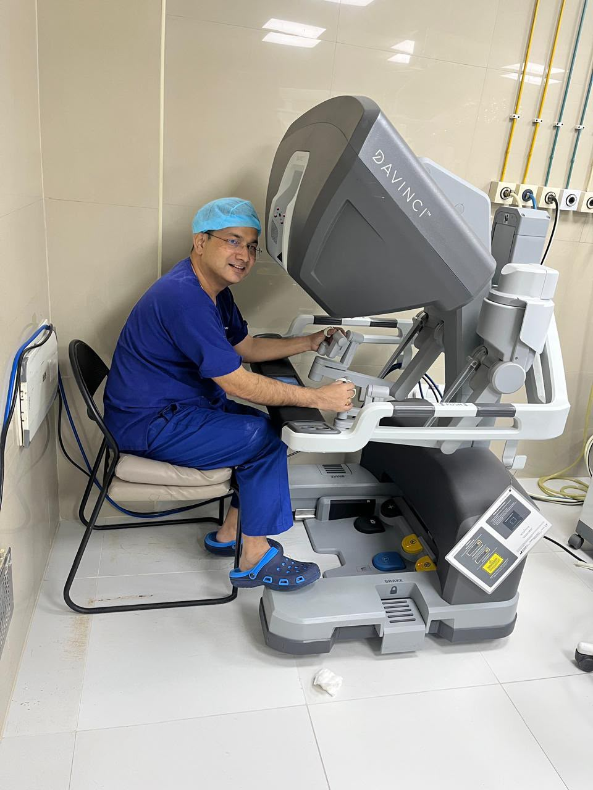

Advanced urology, robotic urology, uro-oncology & reconstructive care.
Service descriptions are based on the doctor's supplied specialization and areas of expertise.

Robotic Urology
Robotic urology is listed as a major area of expertise and special interest in the supplied professional profile.

Uro-Oncology
Uro-oncology is a listed sub-specialty and major area of expertise. Specific diagnosis and treatment options are discussed during consultation.

Reconstructive Urology
Reconstruction is listed as a major expertise and special interest within the doctor's urology practice.
General Urological Care
Consultation is available for urological conditions requiring clinical evaluation and an appropriate care plan.
Urology Consultation
Patients are recommended to schedule an appointment before visiting the hospital for consultation availability.
Follow-up Care
Follow-up consultations may be recommended depending on the condition, treatment plan and clinical requirements.
Prepare for your consultation.
Bring previous medical reports, diagnostic test results, scans, prescriptions, medication details and relevant treatment records, if available.
- Previous medical reports
- Diagnostic tests and scans
- Current prescriptions
- Medication details
- Relevant treatment records
Online consultation availability
The supplied doctor profile does not confirm online consultation availability. Please confirm directly with the hospital or doctor before publishing or promising online appointments.
Ask About Appointment →Focused urology care across evaluation, treatment and follow-up.
The service information below reflects the specialties supplied for Dr. Tikenjit Mazumdar and is presented as a clear patient information guide.
Robotic Urology
Special interest in robotic urology and modern surgical practice.
Uro-Oncology
Specialized urological cancer evaluation and treatment planning.
Reconstructive Urology
Specialist reconstructive assessment for patients requiring focused care.
Designed around clarity, confidence and specialist consultation.
Use the supplied doctor, procedure, hospital and professional-event photographs throughout the website while complementary online imagery adds visual depth to the page backgrounds.